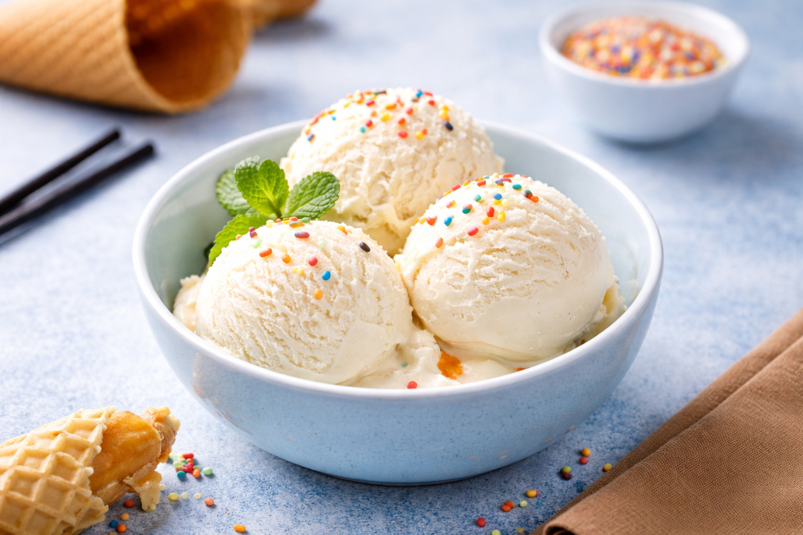

Ice cream is a popular frozen dessert loved worldwide for its creamy texture and sweet flavor. It is typically made by churning a mixture of milk, cream, sugar, and flavorings while cooling it to prevent large ice crystals from forming. This process gives ice cream its smooth and soft consistency.
There are countless variations of ice cream, ranging from classic vanilla and chocolate to fruit-based and exotic flavors. It can be enjoyed on its own or paired with desserts like cakes, waffles, or pies, making it a versatile treat for all ages.